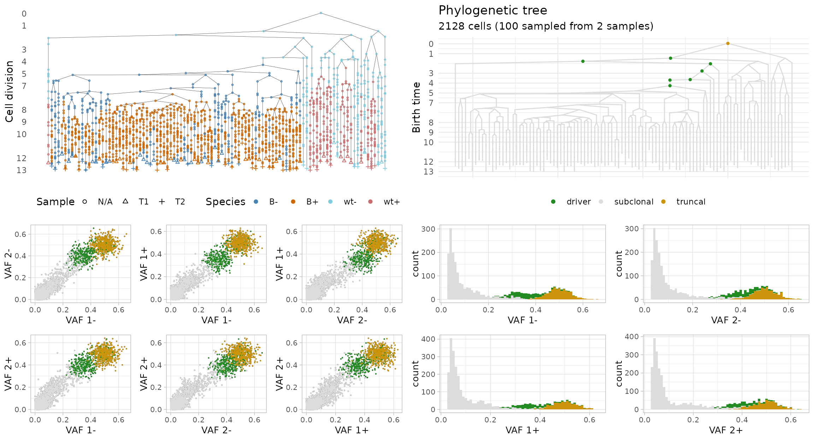
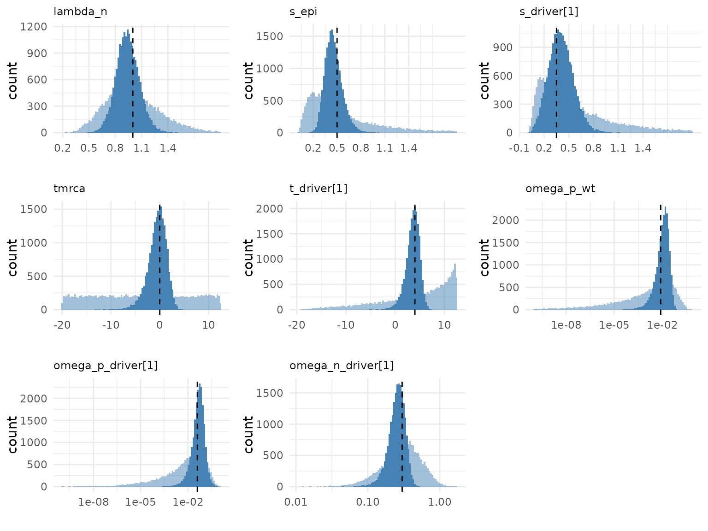
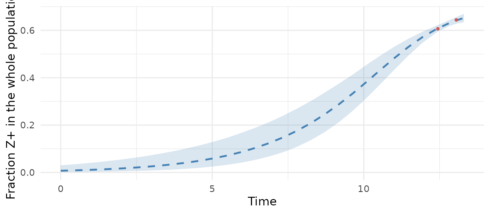
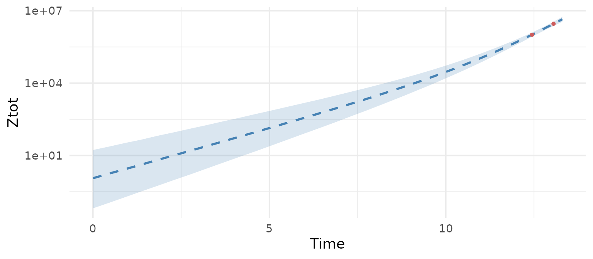
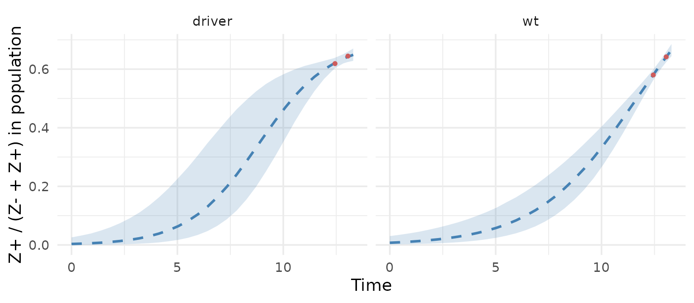
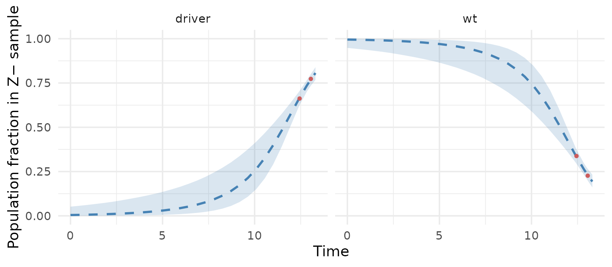
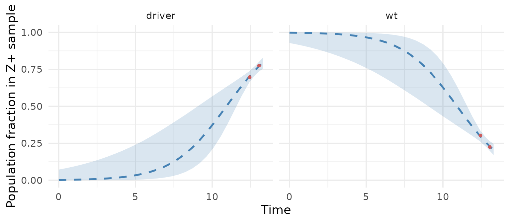

We fit PEPI on the polyclonal dataset generated in
vignette("Data_generation") and shipped with the package: a
wild-type population switching between the “-” and “+” epistates, in
which a driver (mutant B) is acquired by a “-” cell. Cells
are sorted by epistate and sequenced at two time points, and the
population is counted at the same times.
The parameters used to simulate the data are:
truth = c(
"lambda_n" = 1,
"s_epi" = 0.5,
"s_driver[1]" = 0.35,
"omega_p_wt" = 8e-3,
"tmrca" = 0,
"t_driver[1]" = 4,
"omega_p_driver[1]" = 4e-2,
"omega_n_driver[1]" = 0.3
)The data
The phylogenetic forest of the sampled cells, restricted to the branches of 50 random cells per sample, coloured by species (left), and with the driver branch and the truncal node highlighted (right). Below, the pairwise and marginal VAF spectra of the four sorted samples, with the same labels.
PEPI:::plot_data(forest, muts, seed = 31)
From the data to the model input
The model input is built from the population sizes of the “-” and “+” compartments at the two sampling times, the number of mutations on the driver branch, and the CCF of the driver in the four sorted samples. Population sizes and mutation counts are perturbed with measurement noise.
data("counts")
data("muts")
data("forest")
data("mu")
# The two sampling times.
sampling_times = c(
counts$sampling_time_1 %>% unique(),
counts$sampling_time_2 %>% unique()
)
t1 = sampling_times[1]
t2 = sampling_times[2]
# Fraction of "-" and "+" cells in the two samples.
ccf = forest %>% filter(!is.na(sample)) %>% group_by(epistate, sample) %>%
summarize(n = length(cell_id)) %>% group_by(sample) %>% mutate(n = n/sum(n))
# Total population size at the two sampling times...
z1 = counts %>% filter(time == t1) %>%
group_by(epistate, mutant) %>% summarize(count = max(count)) %>%
pull(count) %>% unique() %>% sum()
z2 = counts %>% filter(time == t2) %>%
group_by(epistate, mutant) %>% summarize(count = max(count)) %>%
pull(count) %>% unique() %>% sum()
set.seed(31)
# ... measured with lognormal noise.
z1 = exp(rnorm(n = 1, mean = log(z1), sd = 0.2))
z2 = exp(rnorm(n = 1, mean = log(z2), sd = 0.2))
zminus = c(z1, z2) * (ccf %>% filter(epistate == "-") %>% pull(n))
zplus = c(z1, z2) * (ccf %>% filter(epistate == "+") %>% pull(n))
# The driver is the first cell of mutant "B": its branch carries the
# mutations accumulated from the root to the driver acquisition.
driver_id = forest %>% filter(mutant == "B") %>% pull(cell_id) %>% min()
driver_branch = PEPI:::get_branch(forest, cell_id = driver_id, stop_id = 0)
m_driver = muts %>% filter(first_cell_id %in% driver_branch) %>% nrow()
m_driver = rnbinom(n = 1, mu = m_driver, size = 100)
# Driver CCF in the four sorted samples, from the VAF of the driver
# mutations (VAF 1-, VAF 1+, VAF 2-, VAF 2+).
ccf_dr = 2 * (muts %>% filter(first_cell_id %in% driver_id) %>%
dplyr::select(Sampling_1_N.VAF, Sampling_1_P.VAF,
Sampling_2_N.VAF, Sampling_2_P.VAF) %>%
reshape2::melt(id.vars = NULL) %>%
group_by(variable) %>% summarize(v = mean(value)) %>% pull(v))The prior on the driver “+” → “-” switch rate is derived from the data:
# Gamma prior on the "+" -> "-" switch rate of the driver, from a plausible
# range of values. The growth rate is bounded above by the growth of the
# total population (log-linear fit of noisy counts above 1e5 cells) and below
# by the growth of the driver "+" cells between the two samples.
z = counts %>% group_by(time) %>% summarize(tot = sum(count)) %>%
filter(tot > 1e5)
z$tot = exp(rnorm(n = length(z$tot), mean = log(z$tot), sd = 0.2))
fit = lm(log(tot) ~ time, data = z)
lambda_max = coef(fit)[["time"]]
lambda_min = log((zplus[2] * ccf_dr[4]) / (zplus[1] * ccf_dr[2])) / ((1 + 2) * (t2 - t1))
s_max = 2
s_min = 0.1
# ratio of driver "-" and "+" cells at the second sample
rho = (zminus[2] * ccf_dr[3]) / (zplus[2] * ccf_dr[4])
omega_max = rho * lambda_min * s_max
omega_min = rho * lambda_max * s_min
omega_gamma = PEPI:::fit_gamma_quantiles(omega_min, omega_max, p1 = 0.05, p2 = 0.95)
omega_gamma
#> $shape
#> [1] 2.950961
#>
#> $rate
#> [1] 8.491413The tables required by init_multirates():
tables = list(
population_sizes = tibble(
time = sampling_times,
type = "sampling",
zminus = zminus,
zplus = zplus
),
# the wild type is the complement of the driver
wt_ccf = tibble(
time = rep(sampling_times, each = 2),
epistate = rep(c("-", "+"), 2),
ccf = 1 - ccf_dr
),
driver_muts = tibble(
driver_id = "B",
m_driver = m_driver,
ms_driver = -0.8,
sigma_driver = 0.9,
alpha_n_driver = omega_gamma$shape,
beta_n_driver = omega_gamma$rate,
alpha_p_driver = 0.3,
beta_p_driver = 6
),
driver_ccf = tibble(
driver_id = "B",
time = rep(sampling_times, each = 2),
epistate = rep(c("-", "+"), 2),
ccf = ccf_dr
)
)
x = init_multirates(tables, m_trunk = 0)
tables
#> $population_sizes
#> # A tibble: 2 × 4
#> time type zminus zplus
#> <dbl> <chr> <dbl> <dbl>
#> 1 12.4 sampling 397730. 613447.
#> 2 13.1 sampling 1030393. 1863969.
#>
#> $wt_ccf
#> # A tibble: 4 × 3
#> time epistate ccf
#> <dbl> <chr> <dbl>
#> 1 12.4 - 0.338
#> 2 12.4 + 0.303
#> 3 13.1 - 0.227
#> 4 13.1 + 0.225
#>
#> $driver_muts
#> # A tibble: 1 × 8
#> driver_id m_driver ms_driver sigma_driver alpha_n_driver beta_n_driver
#> <chr> <dbl> <dbl> <dbl> <dbl> <dbl>
#> 1 B 424 -0.8 0.9 2.95 8.49
#> # ℹ 2 more variables: alpha_p_driver <dbl>, beta_p_driver <dbl>
#>
#> $driver_ccf
#> # A tibble: 4 × 4
#> driver_id time epistate ccf
#> <chr> <dbl> <chr> <dbl>
#> 1 B 12.4 - 0.662
#> 2 B 12.4 + 0.697
#> 3 B 13.1 - 0.773
#> 4 B 13.1 + 0.775Inference
fit_multirates() samples the posterior with Hamiltonian
Monte Carlo (NUTS) via cmdstanr: here 4 chains with 1000 warmup and 5000
sampling iterations each. Convergence is assessed in
vignette("Convergence_diagnostics").
x = fit_multirates(
x,
seed = 31,
chains = 4,
parallel_chains = 4,
ndraws = 5000,
adapt_delta = 0.99,
max_treedepth = 15,
init = rep(list(list(omega_p_wt = 3e-3, omega_p_driver = 3e-3)), 4),
mu = mu$mean,
l = 51e06,
t_min = -20,
ms_epi = -0.8,
sigma_epi = 0.9,
alpha_lambda = 10,
beta_lambda = 10,
alpha_n_wt = 1,
beta_n_wt = 1e4,
alpha_p_wt = 0.2,
beta_p_wt = 10,
min_kappa = 3000,
max_kappa = 5000,
min_sigma_count = 0.05,
max_sigma_count = 0.15,
include_poisson = 1,
include_trunk = 0
)Posterior summary, next to the values used to simulate the data:
x$inference$multirates$summary(variables = names(truth)) %>%
mutate(truth = truth[variable]) %>%
dplyr::select(variable, truth, mean, median, sd, q5, q95, rhat, ess_bulk)
#> # A tibble: 8 × 9
#> variable truth mean median sd q5 q95 rhat ess_bulk
#> <chr> <dbl> <dbl> <dbl> <dbl> <dbl> <dbl> <dbl> <dbl>
#> 1 lambda_n 1 0.941 0.937 0.132 0.730 1.16 1.00 6947.
#> 2 s_epi 0.5 0.458 0.447 0.109 0.300 0.652 1.00 7205.
#> 3 s_driver[1] 0.35 0.406 0.398 0.151 0.172 0.666 1.00 9219.
#> 4 omega_p_wt 0.008 0.0147 0.0122 0.0112 0.00161 0.0366 1.00 6572.
#> 5 tmrca 0 -0.551 -0.334 1.93 -3.96 2.17 1.00 7290.
#> 6 t_driver[1] 4 3.55 3.72 1.43 1.00 5.53 1.00 7487.
#> 7 omega_p_driver[1] 0.04 0.0652 0.0498 0.0603 0.00839 0.174 1.00 9328.
#> 8 omega_n_driver[1] 0.3 0.260 0.259 0.0650 0.154 0.368 1.00 9879.Prior vs posterior
Prior (transparent) and posterior (solid) distributions; dashed lines mark the values used to simulate the data.
x = get_posterior_multirates(x)
plot_prior_posterior(x, params = names(truth), truth = truth)
Posterior predictive checks
get_predicted_trajectories() simulates new data from the
posterior along a time grid. For every draw, the latent “-” and “+”
sizes of each population are computed from the model; each population
then gets a lognormal total count and a beta “+”/“-” split, as in the
likelihood, and CCFs are evaluated on the sampled counts within the “-”
and “+” samples. Observed data are shown in red.
pred = get_predicted_trajectories(x)Fraction of “+” cells in the whole population and total population size:
plot_fractions(x, pred)
plot_counts(x, pred)
Two different fractions describe each population (wild type, driver). The first is the fraction of its cells in the “+” state, : how the population itself is split between the two epistates.
plot_split(x, pred)
The second is the fraction of each sorted sample made of the population, i.e. its CCF in that sample: in the “-” sample and in the “+” sample. In each sample these fractions sum to 1 over the populations.
plot_ccf(x, epistate = "-", pred = pred)
plot_ccf(x, epistate = "+", pred = pred)